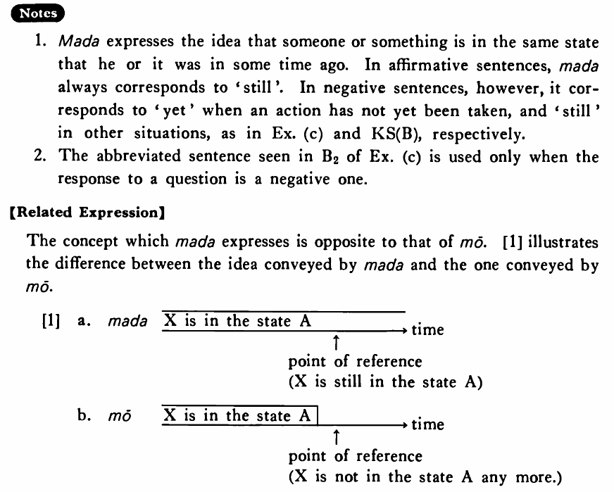

まだ (B. 224)
- (ksa).
- 木村君はまだ昼ご飯を食べている・います。
- Mr. Kimura is still eating his lunch.
- (ksb).
- 太田さんはまだそのことを知らない・知りません。
- Mr. Oota still doesn't know about it.
- (a).
- お酒はまだありますか。
- Do you still have sake?
- (b).
- 私はまだ日本へ行ったことがない。
- I have not been to Japan yet.
- (c).
- A:もう昼ご飯を食べましたか。 B:いえ、まだ食べていません。/いい、まだです。
- A: Have you eaten your lunch yet? B: No, I haven't eaten it yet./No, not yet.
